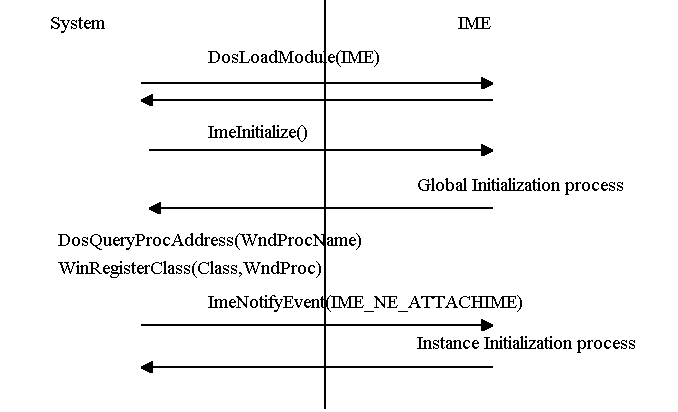

When some IME is a default IME for some language, and some application starts with that language, System will load that IME. After loading of that IME, ImeInitialize is called for the global initialization. With this call, IME can be able to notify the system of its capabilities and IME Window related information, i.e., class name and the function name of the window procedure. Following picture shows the global IME initialization. 
If IME provides the IME Window class name and its window procedure name, system will register that class for IME as a PUBLIC-like class by registering the class for each loaded process.
Because the system queries the window procedure address by its function name, IME should explicitly export that entry with the function name.
As seen in the above picture, ImeInitialize is called after the _DLL_InitTerm entry if IME have.
IME should not issue any of the PM APIs which require PM message queue within _DLL_InitTerm entry, otherwise the system cannot boot up in FullScreen mode only(no-PM environment).
After the global initialization, ImeNotifyEvent with IME_NE_ATTACHIME is called for each instance initialization. IME should minimize its instance initialization for the best system performance.